My Petmate MVP Wireframes v4
Backend MVP 동작을 기준으로 정의한 24개 화면
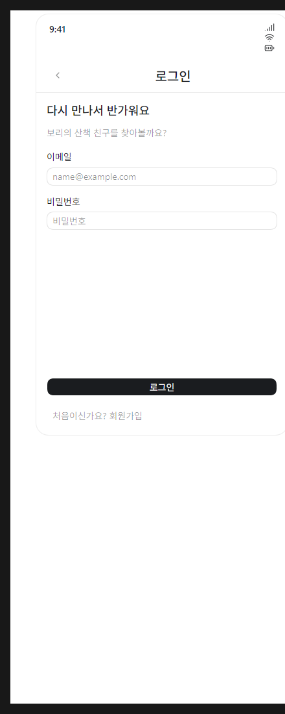
01 · AUTH-01 로그인
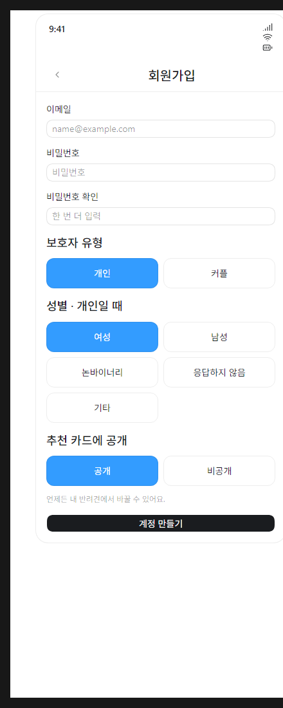
02 · AUTH-02 회원가입
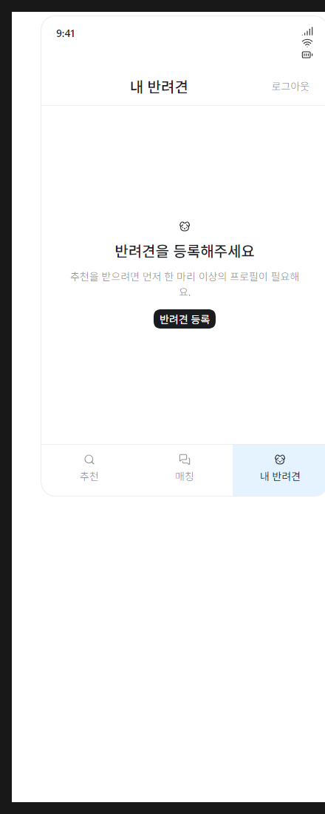
03 · DOG-01A 등록된 반려견 없음
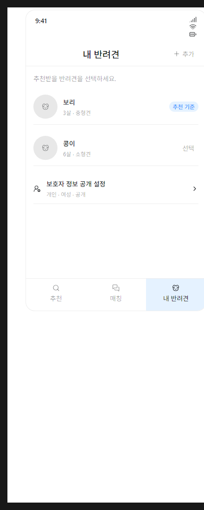
04 · DOG-01B 여러 반려견과 기준 선택
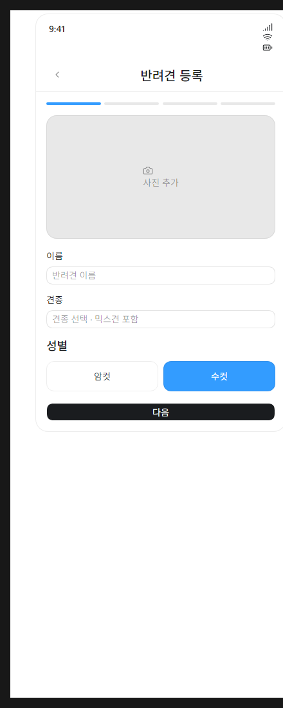
05 · DOG-02 기본 정보
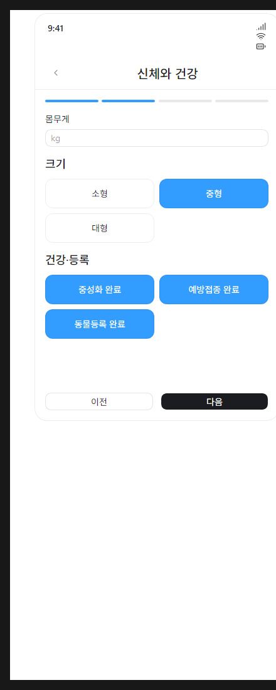
06 · DOG-03 신체와 건강
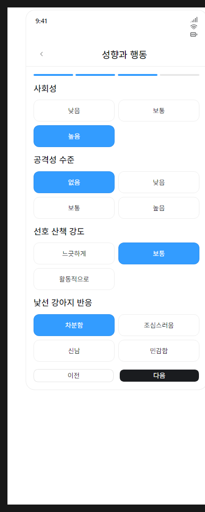
07 · DOG-04 성향과 행동
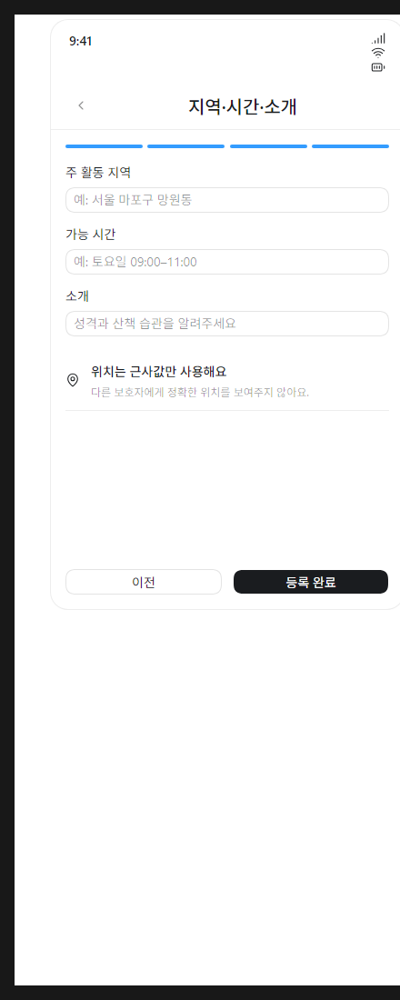
08 · DOG-05 지역·시간·소개
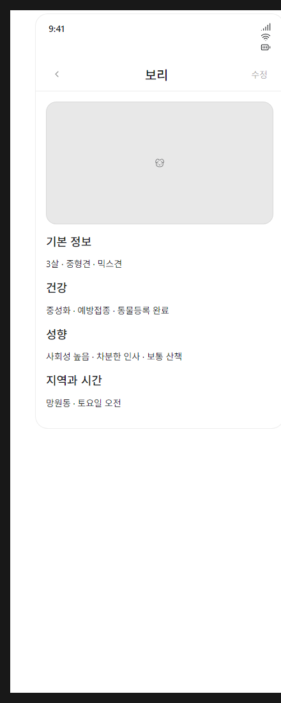
09 · DOG-06 반려견 상세
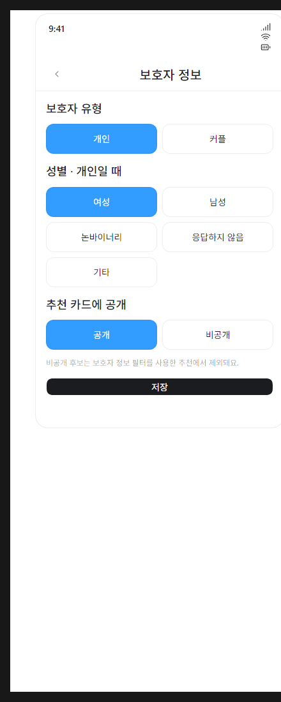
10 · GUARDIAN-01 보호자 정보 공개 설정
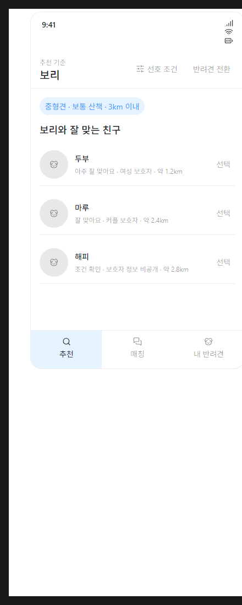
11 · REC-01 추천 목록
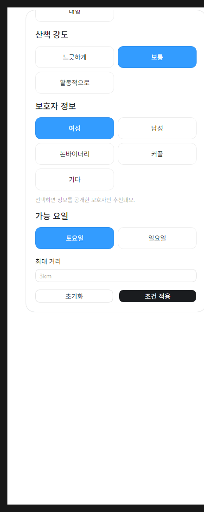
12 · REC-02 선호 조건
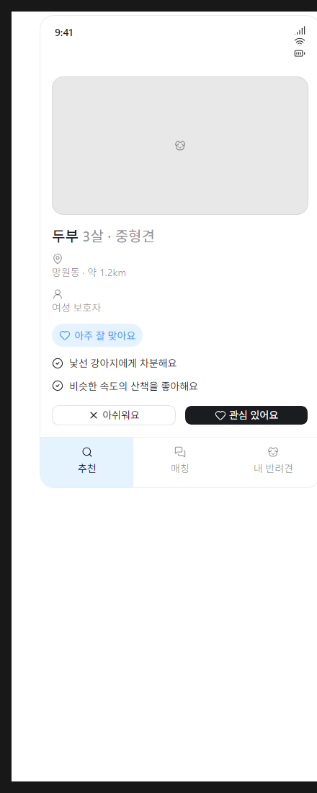
13 · REC-03 추천 상세
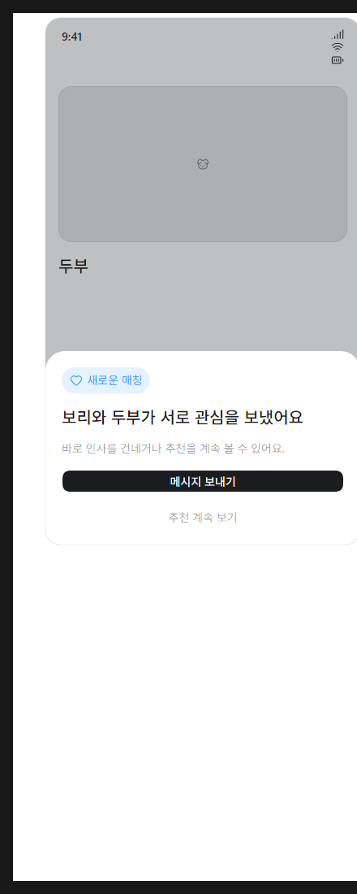
14 · REC-04 상호 관심 결과
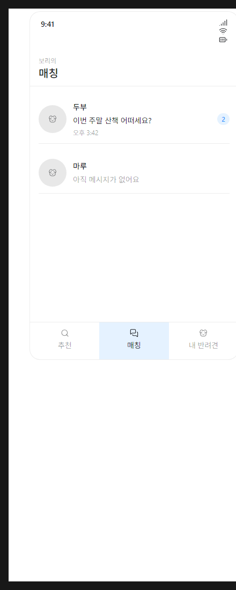
15 · MATCH-01 매칭 목록
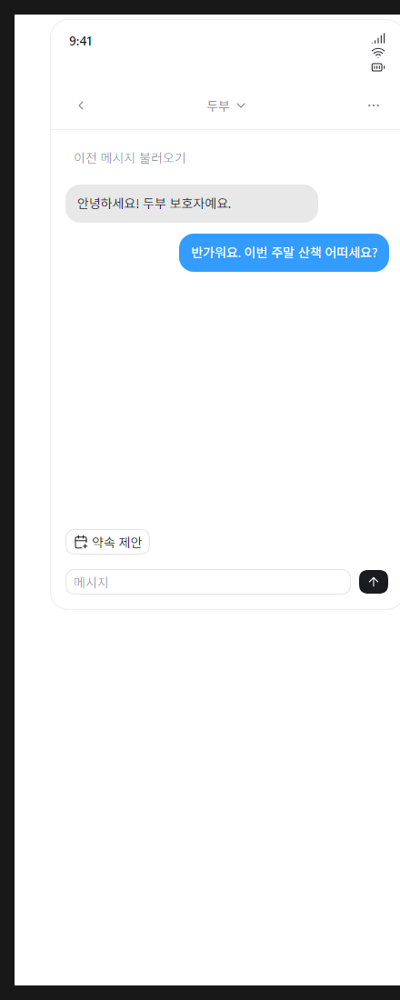
16 · CHAT-01 1:1 채팅
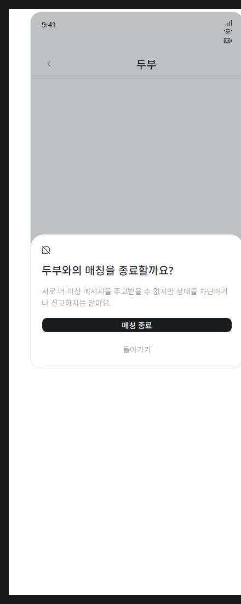
17 · MATCH-CLOSE-01 매칭 종료
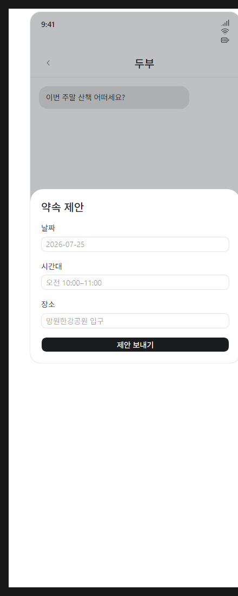
18 · APPT-01 약속 제안
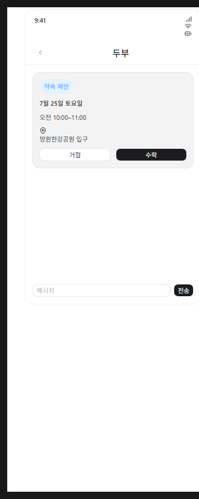
19 · APPT-02 제안받은 약속 카드
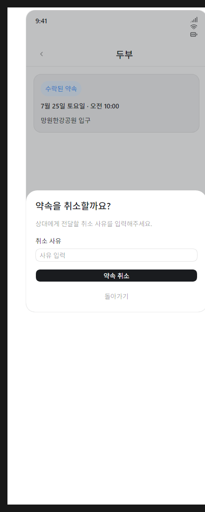
20 · APPT-03 수락된 약속 취소
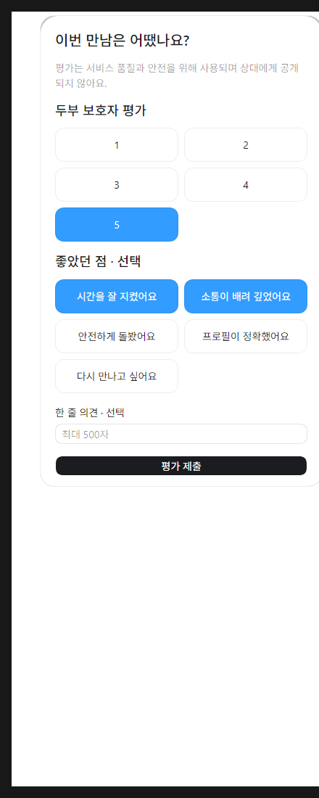
21 · APPT-04 약속 후 상대 평가
22 · SAFE-01 차단 확인
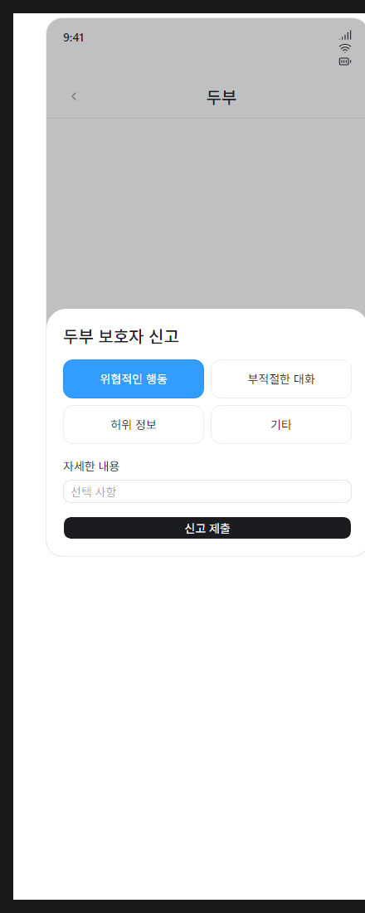
23 · SAFE-02 신고
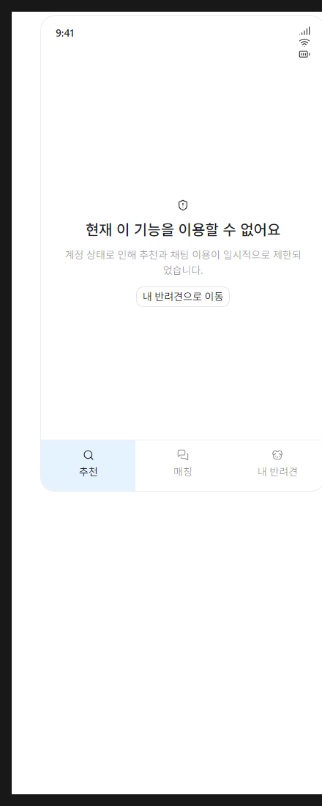
24 · SAFE-03 접근 제한 안내